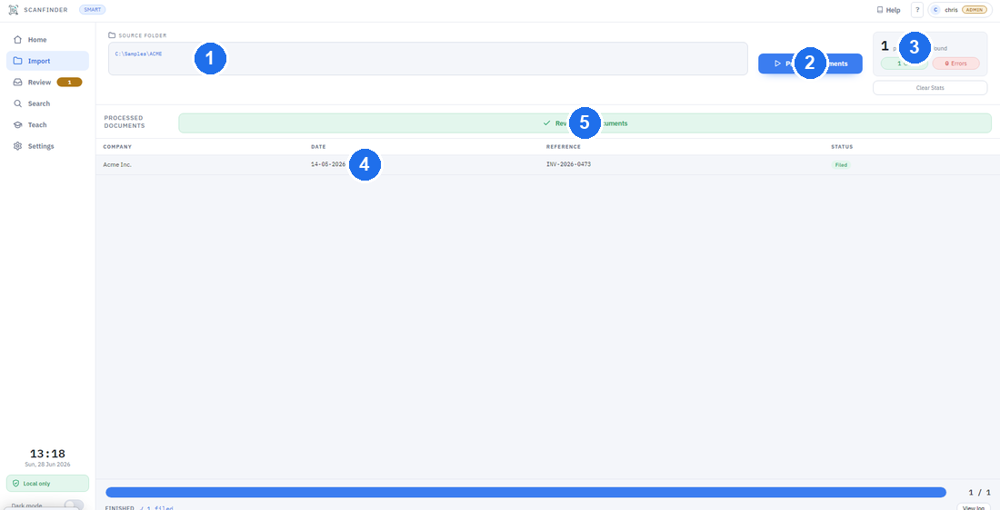

Importing Documents
Importing is how you bring scans into Scan Finder so it can read them. You point it at a folder of documents, and it processes them one by one.
Two folders, two different jobs
It's worth knowing the difference between these from the start — they are not the same:
- Source folder — where your incoming scans live. This is what you choose when you import.
- Output folder — where Scan Finder saves the finished, filed documents. You set this once during first-time setup (and can change it in Settings).
When you click Import, choose the folder your scans came from — not your output folder. The output folder is managed for you; you rarely need to open it by hand.
How to import and process
- Open Import from the nav rail, then click the Source Folder box at the top.
- Choose the folder that contains your scans, then confirm.
- Click Process Documents to start.
- A progress indicator shows how far along it is. You can click Stop at any time to halt safely — anything already finished is kept.
Scan Finder works with PDF scans and common image files (such as PNG and JPG).

What happens after importing
For each document, Scan Finder:
- Reads the text on the page (this is called OCR — it simply means turning a picture of text into text the computer can use).
- Pulls out the key fields — things like the date, the reference number and the supplier.
- Decides how sure it is. Confident documents can be filed straight through; anything it's unsure about waits for you in the Review Queue.
Watch the Review Queue badge at the top of the window — the number tells you how many documents need a quick human check.
Separator sheets — scan a whole pile at once
If your scanner saves a stack of paper as one PDF, separator sheets tell Scan Finder where one document ends and the next begins:
- Click Print separator sheets (on the Import screen, or in Settings → Processing) and print the pack — double-sided if your printer can.
- Slot a sheet between documents in the pile. Any way up is fine.
- Scan the whole pile as one batch and import it. Scan Finder splits the batch at every sheet and removes the sheet pages from the filed documents automatically.
The sheets are reusable — keep the pack by the scanner. Turn the feature on with Recognise separator sheets in Settings → Processing.
If a sheet can't be read (badly creased, very faint print), nothing is split — the batch simply arrives as one document in Review, where the Split tool can divide it by hand. And for now, sheets are recognised on manual Import only — not yet in the auto-import (watch) folder.
What to expect
- Speed depends on how many documents you import, how clear the scans are, and your performance settings. Large batches take longer.
- Clear scans read better. Faint, skewed or very low-quality scans are more likely to need a review — that's normal, and there are tools in the Review window to help.
- Nothing leaves your computer. All reading and filing happens locally.
Once processing finishes, open the Review Window to check and file your documents.